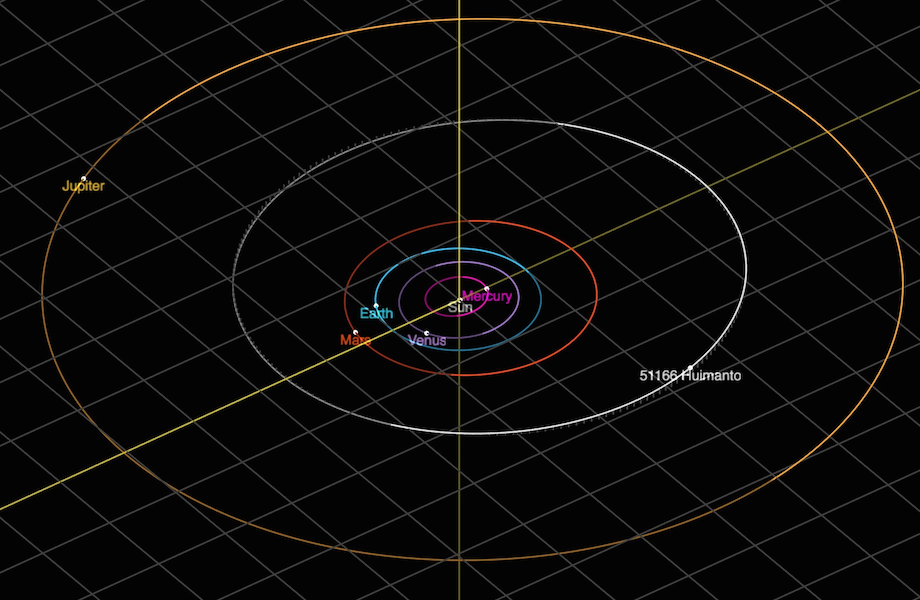
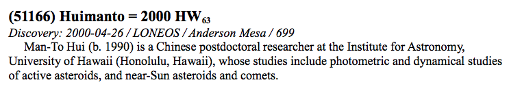

Asteroid (51166) Huimanto = 2000 HW63
Orbital Elements at Epoch 2459396.5 = 2021-Jul-01.0 TDB (JPL Solution 34):
| Eccentricity \(e\) | 0.18408 |
| Semimajor axis \(a\) (au) | 3.13258 |
| Inclination \(i\) (°) | 1.71839 |
| Longitude of ascending node \(\Omega\) (°) | 34.85610 |
| Argument of perihelion \(\omega\) (°) | 339.19774 |
| Perihelion epoch \(t_{\rm p}\) (TDB) | 2019-May-26.574 |
According to Maseiro et al. (2017, AJ, 741, 68), the asteroid has a diameter of 8.54 ± 0.46 km, and has a comet-like geometric albedo (4.2 ± 0.5)%.

The announcement was made in WGSBN Bull. 1, #2, 26 on 2021 June 11th:

I quite like the provisional and permanent designations of this asteroid. My appreciation for people at the Lowell Observatory naming this asteroid after me.